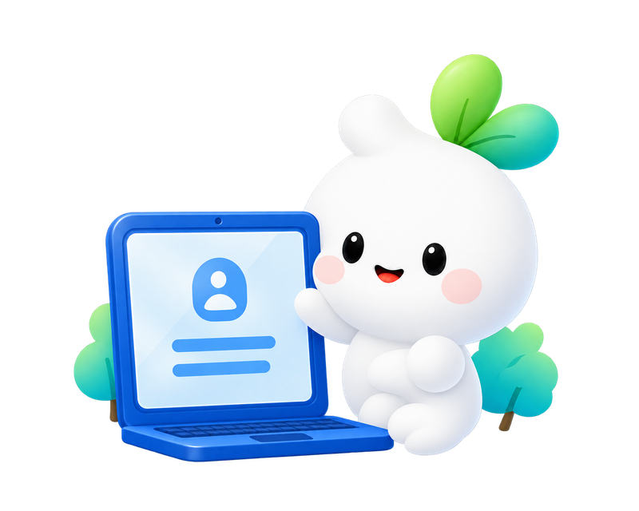
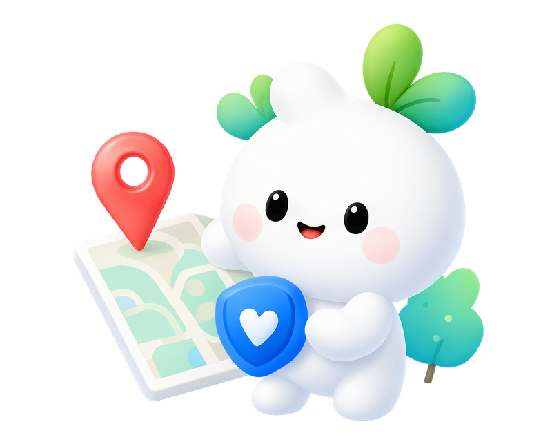

WHAT IS UNSEEN?
무심코 남긴 정보,
함께 살펴봐요.
UNSEEN은 사진, 위치, 계정 정보가 일상에 남는 과정을 살펴보고, 개인정보 보호 습관을 제안하는 캠페인입니다.
안녕하세요, 안내자 씬(SEEN)이에요!
놓치기 쉬운 개인정보의 단서를 함께 살펴봐요.
ACCOUNT
가입하면서 남긴 정보
이름과 닉네임, 프로필 사진까지. 서비스에 가입할 때 입력한 정보가 계정에 남아요.

PHOTO
사진에 함께 담긴 정보
사진에는 얼굴뿐 아니라 명찰, 학교 이름, 집 주변의 모습도 담길 수 있어요.
LOCATION
장소와 시간으로 남는 일상
게시물의 위치 태그와 방문한 장소에는 언제, 어디에 있는지 드러날 수 있어요.
